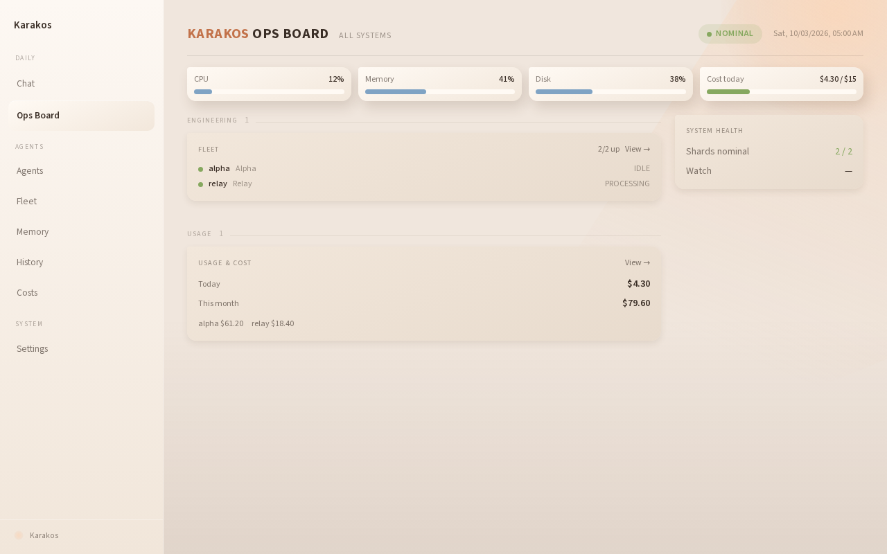
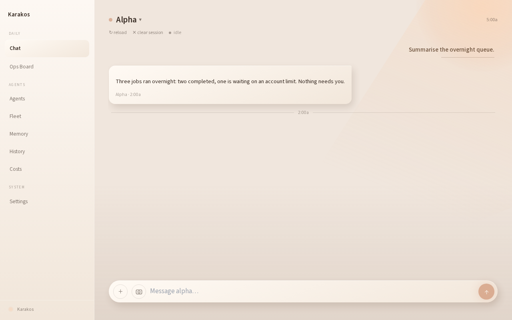
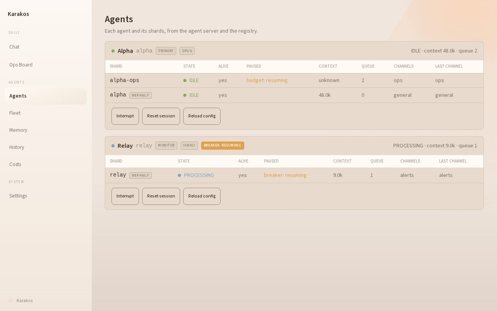
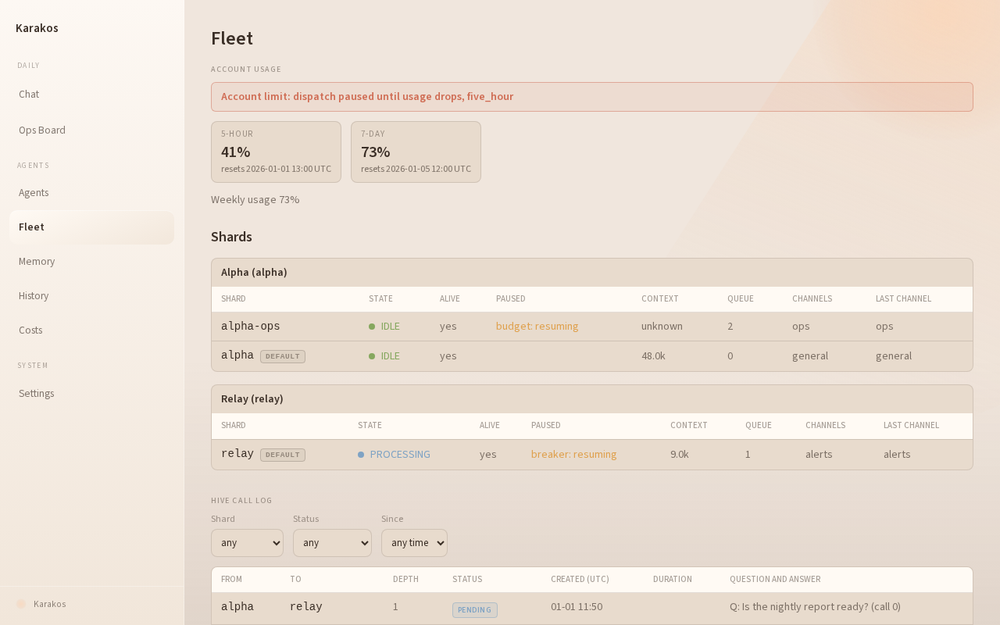
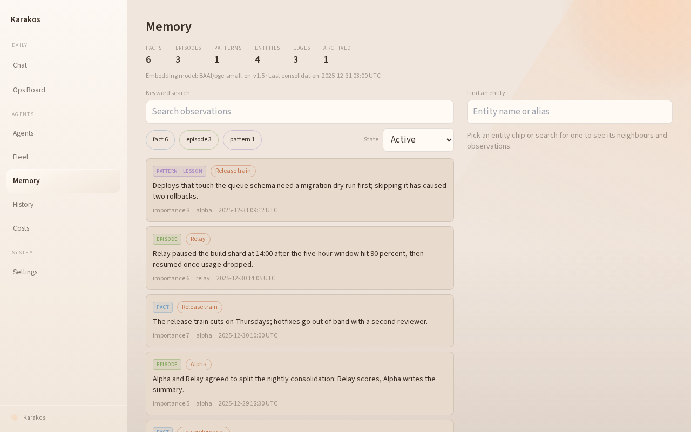
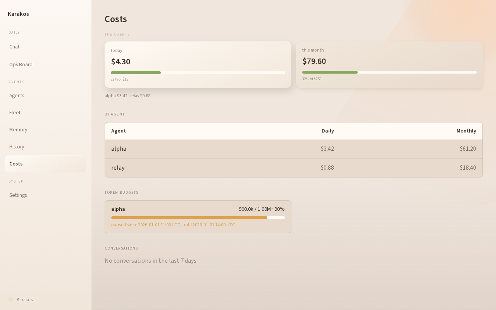

🦀 Karakos 2.0 · open source · MIT
Karakos
a standing Claude agent
on your own hardware
It answers in your Discord, remembers you between restarts, and stops spending at a cap you set. One Docker container.
github.com/mcarmody/karakos-package
What is it
Claude, given a home and a job
- Claude is Anthropic's AI model. Normally you open a chat window, ask, and close it; it forgets you.
- Karakos keeps Claude running permanently on a computer you own, as an agent: an assistant that takes actions with tools, not just answers.
- You talk to it where you already are: a Discord channel, or its own web dashboard.
- It remembers what you tell it, across days and restarts.
- It works on a schedule: checks, reminders and follow-ups, without being asked each time.
- It watches its own spending and stops at a limit you set.
- It installs as one Docker container with a single command.
What you get
Feature list
- Always-on agents. A primary assistant plus a cheap monitor that raises alerts. Conversations survive crashes and restarts.
- Discord and web chat. Same agent, same memory, either place.
- Long-term memory. A knowledge graph of people, things and facts, searched locally. Recall costs nothing.
- Cost caps. Spend metered per agent; daily and monthly limits enforced before a message runs, with warnings first.
- Reliable delivery. A Discord outbox with retries: an outage delays a reply, never loses it.
- Scheduler. Heartbeats, health sweeps, memory cleanup, and one-off "check back in ten minutes" jobs that survive a restart.
- Dashboard. Ops board, chat, agents, fleet, memory, history and costs at
localhost:3000.
- More agents on demand. Builder (spec in, pull request out) and reviewer templates; parallel shards that share memory.
- Your own tools. Drop a script and a
tools.json into skills/.
- Guarded self-modification. Agents can improve the system; lifecycle and security files stay locked.
- Onboarding. A new agent starts by learning who you are.
How it fits together
One container, four processes
Discord browser
│ │ :3000
relay.py dashboard (Next.js)
└──────┬─────────┘
▼ HTTP + token
agent-server.py :18791
• message queue
• cost guard
• agent sessions (claude CLI)
▲
scheduler.py
heartbeats · oneshots
supervisord runs everything; there is no multi-service stack to reason about.- Agents are Claude Code sessions, signed in with your own Claude login. There is no API key to paste.
- State lives in one workspace on disk: queue, graph memory, logs.
- The prebuilt image comes from GHCR (~1.2 GB). Nothing compiles locally.
Dashboard
Ops board
- Health of every agent at a glance.
- CPU, memory and disk.
- Spend today against the cap.

Dashboard
Chat
- Talk to any agent from the browser, as well as from Discord.
- Reload or clear a session with one click.
- The same queue and memory sit behind both.

Agents
Two by default, more on one command

Agents: the primary assistant and a cheap monitor that raises alerts

Fleet: shards, parallel conversations that share memory, talk through the hive
Memory and spend
It remembers, and it stops

Memory: entities, links and facts, searchable

Costs: per-agent spend against daily and monthly caps
Extending it
Builders, reviewers, your own tools
Add a builder agent
make shell
bin/create-agent.sh --template builder \
--model sonnet builder
It takes a spec and opens a pull request. A reviewer template reviews before merge.
- Your own tools: drop
tools.json and a script in skills/<name>/, and the tool server picks it up at start.
- Fenced self-modification: builders can change the system, but
config/protected-paths.json blocks the files that own lifecycle and security.
- Onboarding: a fresh agent starts by learning who you are.
Install · today
Before you start
- Docker running (Engine 24+ with Compose v2), plus Git and
jq.
- A Claude account to sign in with:
claude login.
- A Discord bot: create the app, copy its token, invite it, and note your channel IDs. This is the slowest step, so do it first.
- 4 GB RAM minimum (8 recommended) and 10 GB of disk.
Guides
The README estimates $5–15 a week for typical use; the caps keep a surprise small.
Install · one line
Run the installer, then answer the wizard
macOS, Linux, or Windows through WSL2
curl -fsSL https://raw.githubusercontent.com/mcarmody/karakos-package/main/install.sh | bash
- The wizard asks for a system name, your Claude login, the Discord token and channel IDs, and your spend caps.
- It pulls the image, starts the container, and prints the dashboard password.
- Open http://localhost:3000, log in as
admin, and say hello in Discord.
- On Windows, use the Linux one-liner inside WSL2. The PowerShell installer has not been retested for 2.0.
🦀 Live
Demo:
a household running on it
The hub at home is the same lineage, grown up: several agents, voice, kitchen, garden, builds, and a nightly review of its own mistakes.
🦀